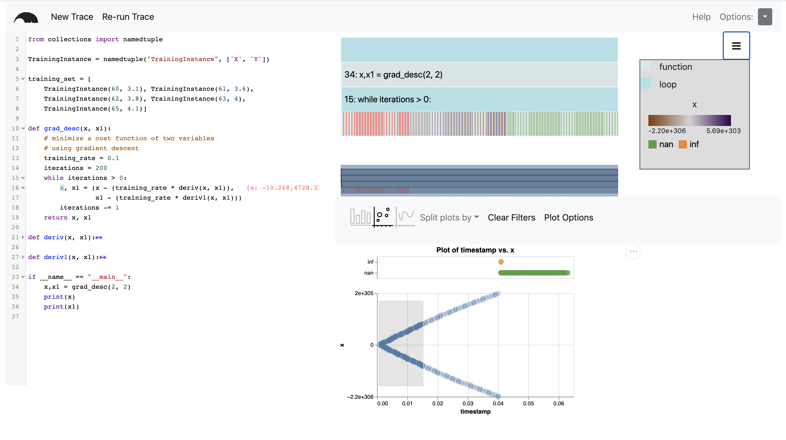

This study evaluates Anteater: a system for tracing programs and creating interactive visualizations of program execution values in context.
What is Anteater?
Anteater is a debugging tool designed to take a visualization-first approach to debugging.
Rather than dumping text values for the programmer to inspect or requiring them to
recall past values as they step through execution and inspect the values at each step,
Anteater automatically instruments and traces the program to collect the execution
structure and all of the program values the programmer desires (as sepcified by the programmer).
It then provides interactive visualizations of the overall execution and program values
in context of the execution.
Anteater provides more informative overviews of a program’s behavior while supporting
interaction to dig deeper into the details of the execution. Rather than showing the
whole state at a single step in time, it shows a single variable over the entirety of
the execution. Anteater aims to reduce the effort required from a programmer by 1) automatically
instrumenting programs to collect the values they want to inspect and 2) allowing them to
browse values of interest easily throughout the entire execution, without resorting to a
step-through debugger.
The Anteater UI, shown below, provides a visualization of the execution structure
(the icicle plot in the upper side of the screen between the code and the legend) that shows
the call and loop structure of the program as well as the tracked values as the occur.
The plot in the bottom right provides visualizations of tracked values. In this case, it shows a scatterplot
of the tracked value "x" over the entire execution. Interactions link the two views
to allow the programmer to maintain context with the overall execution. For example,
brushing in the scatterplot highlights (in red) the corresponding blocks in the execution tree.

Purpose of the Study
The purpose of this study is to evaluate the capabilities and limitations of Anteater, a visual debugging tool. Anteater was designed to aid everyday programmers in understanding and debugging their programs through the use of interactive visualizations. To evaluate Anteater, we are having participants with programming experience complete debugging tasks using Anteater and a standard debugging tool to gather their feedback on their experiences with the two tools. Note, this study must be completed on the Google Chrome browser.
Length & Compensation
This study will take 30-60 minutes. You will be asked to debug two programs, one with Anteater and one with a more traditional debugging technique. As compensation, you will be entered into a drawing for a $100 Amazon giftcard.
The study will be hosted through Google Forms. If you would like to participate, and meet the qualifications of:
- being 18 years or older
- having some programming experience
- being able to complete the study on Google Chrome,